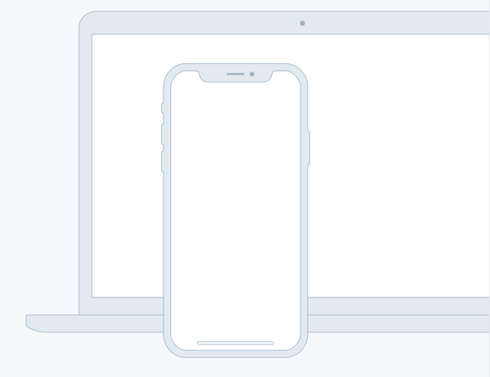

TAGLINE
Sources helps creators do more of what they love
A device that enables collaboration will lessen the chance of work having to be completely redone.

Feature one
In such a test, the user performs realistc task by interacting with the paper prototype
First linkFeature two
Three techniques of paper prototyping used for usualibity testing are comps, wireframes
Second linkFeature three
Rapid prototyping involves a group of designers who each create a paper prototype
Third linkFeature fourth
Functionality is similarly unimportant, but in this case are closer to the final product
Fourth linkCollecting information about the problem
In the context of information architecture, information is separate from both knowledge and data, and lies nebulously between them